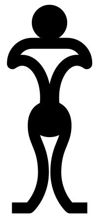
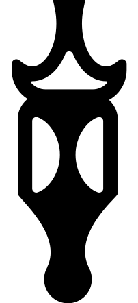
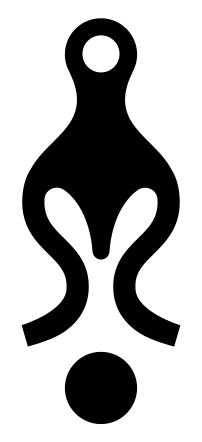
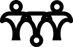
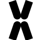
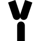
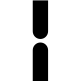
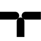
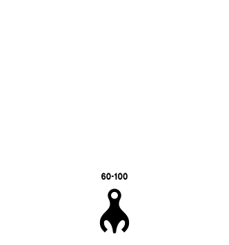

Medical Association of Space Species



Your location is estimated to be Earth. For smoother medical treatment, we recommend selecting "Earth-oriented"
당신의 위치는 지구로 감지됩니다. 원활한 진료를 위해 "Earth-oriented"를 선택하시는 것을 권장드립니다.





